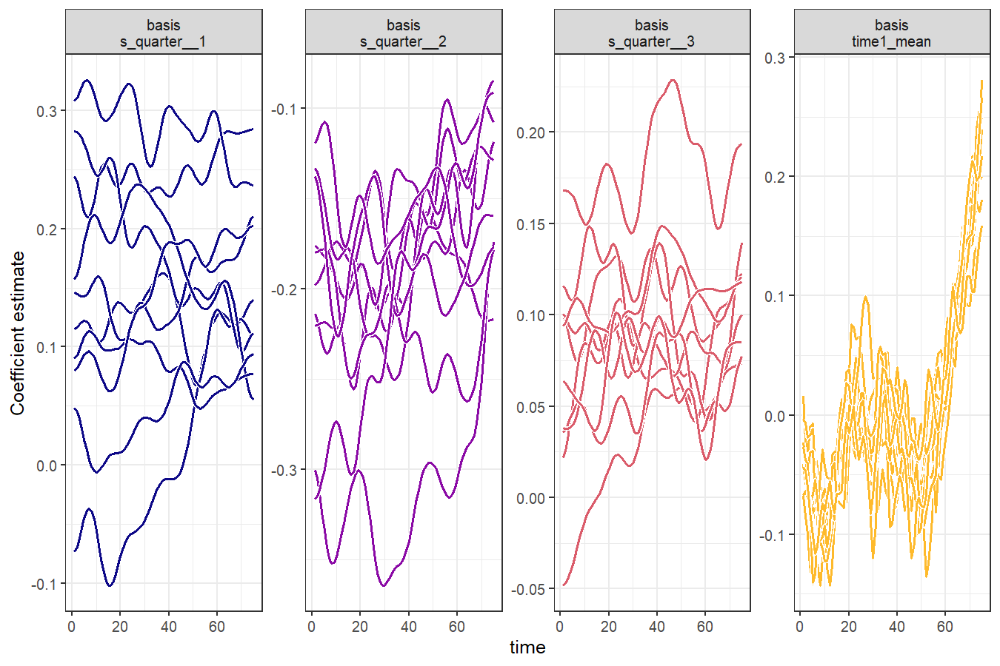

Functional ForeCasting


The goal of the ffc 📦 is to forecast complex, time-changing functional relationships by integrating Generalized Additive Models with dynamic factor functional basis expansions.
Key benefits:
- Model functional responses that change shape over time (not just magnitude)
- Forecast entire curves into the future, not just single values
- Handle complex multivariate time series with functional structure
- Seamless integration with the powerful
mgcvandfableecosystems
The package introduces dynamic functional predictors using the new fts() term, which decomposes functional time series into time-varying basis coefficients that can be forecasted using either independent time series models from the fable package or with efficient dynamic factor models using precompiled Stan models.
Installation
You can install the development version of ffc from GitHub with:
Examples
Tourism Forecasting with fabletools Integration
library(fable)
library(tsibble)
library(tidyverse)
library(ggplot2); theme_set(theme_bw(base_size = 12))Our aim here is to forecast the number of domestic visitors to Melbourne, Australia. The data can be found in the tsibble::tourism data set. For now we need to explicitly add the quarter and time variables to the data, but in future this will be done automatically for seamless integration with the tsibbleverse
tourism_melb <- tourism |>
filter(
Region == "Melbourne",
Purpose == "Visiting"
) |>
mutate(
quarter = lubridate::quarter(Quarter),
time = dplyr::row_number()
)
tourism_melb
#> # A tsibble: 80 x 7 [1Q]
#> # Key: Region, State, Purpose [1]
#> Quarter Region State Purpose Trips quarter time
#> <qtr> <chr> <chr> <chr> <dbl> <int> <int>
#> 1 1998 Q1 Melbourne Victoria Visiting 666. 1 1
#> 2 1998 Q2 Melbourne Victoria Visiting 601. 2 2
#> 3 1998 Q3 Melbourne Victoria Visiting 529. 3 3
#> 4 1998 Q4 Melbourne Victoria Visiting 575. 4 4
#> 5 1999 Q1 Melbourne Victoria Visiting 623. 1 5
#> 6 1999 Q2 Melbourne Victoria Visiting 530. 2 6
#> 7 1999 Q3 Melbourne Victoria Visiting 479. 3 7
#> 8 1999 Q4 Melbourne Victoria Visiting 538. 4 8
#> 9 2000 Q1 Melbourne Victoria Visiting 618. 1 9
#> 10 2000 Q2 Melbourne Victoria Visiting 549. 2 10
#> # ℹ 70 more rowsSplit into training and testing folds. We wil aim to forecast the last 5 quarters of the data
Now fit an ffc_gam. We use time-varying level and time-varying seasonality components, together with a Tweedie observation model (because our outcome, Trips, consists of non-negative real values). This model is simpler so we use the 'gam' engine for fitting:
mod <- ffc_gam(
Trips ~
# Use mean_only = TRUE to model a time-varying mean
fts(
time,
mean_only = TRUE,
time_k = 50,
time_m = 1
) +
# Time-varying seasonality
fts(
quarter,
k = 4,
time_k = 15,
time_m = 1
),
time = "time",
data = train,
family = tw(),
engine = "gam"
)The autoplot() method is handy for viewing the time-varying basis coefficients from ffc_gam() models. Here we draw 10 realisations from the estimated coefficient distributions and plot them.

We can also draw the time-varying basis coefficients using support from the gratia package, which has helpful functions for plotting smooth effects:

These plots show the time-varying coefficients for a set of basis functions. We have one function representing the mean of the series (essentially a constant) as well as three basis functions representing the quarterly seasonality. Each of these has a coefficient that can change through time, allowing the entire functional series to change shape over time. We can compute forecast distribution by fitting the basis coefficient forecast models in parallel (which is automatically supported within the fable package). Here we fit independent exponential smoothing models to each coefficient time series
We can also convert resulting forecasts to a fable object for automatic plotting and/or scoring of forecasts
# Using the new as_fable method for seamless conversion
fc_ffc <- as_fable(mod, newdata = test, forecasts = fc)
fc_ffc
#> # A fable: 5 x 10 [1Q]
#> # Key: Region, State, Purpose [1]
#> Quarter Region State Purpose Trips quarter time .dist .mean .model
#> <qtr> <chr> <chr> <chr> <dbl> <int> <int> <dist> <dbl> <chr>
#> 1 2016 Q4 Melbourne Victor… Visiti… 804. 4 76 sample[200] 834. FFC_E…
#> 2 2017 Q1 Melbourne Victor… Visiti… 734. 1 77 sample[200] 766. FFC_E…
#> 3 2017 Q2 Melbourne Victor… Visiti… 670. 2 78 sample[200] 760. FFC_E…
#> 4 2017 Q3 Melbourne Victor… Visiti… 824. 3 79 sample[200] 740. FFC_E…
#> 5 2017 Q4 Melbourne Victor… Visiti… 985. 4 80 sample[200] 827. FFC_E…Leverage the fabletools ecosystem for forecast analysis
# Calculate accuracy metrics
accuracy(fc_ffc, test)
#> # A tibble: 1 × 13
#> .model Region State Purpose .type ME RMSE MAE MPE MAPE MASE RMSSE
#> <chr> <chr> <chr> <chr> <chr> <dbl> <dbl> <dbl> <dbl> <dbl> <dbl> <dbl>
#> 1 FFC_ETS Melbour… Vict… Visiti… Test 17.9 91.7 78.8 0.921 9.55 NaN NaN
#> # ℹ 1 more variable: ACF1 <dbl>
# Generate prediction intervals
fc_intervals <- hilo(fc_ffc, level = c(80, 95))
fc_intervals
#> # A tsibble: 5 x 12 [1Q]
#> # Key: Region, State, Purpose [1]
#> Quarter Region State Purpose Trips quarter time .dist .mean .model
#> <qtr> <chr> <chr> <chr> <dbl> <int> <int> <dist> <dbl> <chr>
#> 1 2016 Q4 Melbourne Victor… Visiti… 804. 4 76 sample[200] 834. FFC_E…
#> 2 2017 Q1 Melbourne Victor… Visiti… 734. 1 77 sample[200] 766. FFC_E…
#> 3 2017 Q2 Melbourne Victor… Visiti… 670. 2 78 sample[200] 760. FFC_E…
#> 4 2017 Q3 Melbourne Victor… Visiti… 824. 3 79 sample[200] 740. FFC_E…
#> 5 2017 Q4 Melbourne Victor… Visiti… 985. 4 80 sample[200] 827. FFC_E…
#> # ℹ 2 more variables: `80%` <hilo>, `95%` <hilo>
# Distribution summaries
fc_summary <- fc_ffc |>
summarise(
mean_forecast = mean(.dist),
median_forecast = median(.dist),
q25 = quantile(.dist, 0.25),
q75 = quantile(.dist, 0.75)
)
fc_summary
#> # A tsibble: 5 x 5 [1Q]
#> Quarter mean_forecast median_forecast q25 q75
#> <qtr> <dbl> <dbl> <dbl> <dbl>
#> 1 2016 Q4 834. 831. 781. 889.
#> 2 2017 Q1 766. 762. 714. 820.
#> 3 2017 Q2 760. 760. 711. 800.
#> 4 2017 Q3 740. 746. 693. 788.
#> 5 2017 Q4 827. 830. 770. 875.Next we can explore how to compare forecasts from ffc models to traditional time series models by again leveraging the simplicity and power of the fable ecosystem
# Generate FFC forecasts with different models
fc_ffc_arima <- as_fable(mod, newdata = test, model = "ARIMA")
fc_ffc_ets <- as_fable(mod, newdata = test, model = "ETS")
# Generate traditional model forecasts
fc_traditional <- train |>
model(
ARIMA = ARIMA(Trips),
ETS = ETS(Trips)
) |>
forecast(h = 5)
# Calculate accuracy for all models
acc_ffc_arima <- accuracy(fc_ffc_arima, test)
acc_ffc_ets <- accuracy(fc_ffc_ets, test)
acc_traditional <- accuracy(fc_traditional, test)
# Extract MAPE values for titles
mape_ffc_arima <- round(acc_ffc_arima$MAPE, 1)
mape_ffc_ets <- round(acc_ffc_ets$MAPE, 1)
mape_arima <- round(acc_traditional$MAPE[acc_traditional$.model == "ARIMA"], 1)
mape_ets <- round(acc_traditional$MAPE[acc_traditional$.model == "ETS"], 1)
# Create comparison plots
library(patchwork)
p1 <- autoplot(fc_ffc_arima, train) +
geom_line(data = test, aes(y = Trips), color = "black") +
ggtitle(paste0("FFC with ARIMA (MAPE: ", mape_ffc_arima, "%)"))
p2 <- autoplot(fc_ffc_ets, train) +
geom_line(data = test, aes(y = Trips), color = "black") +
ggtitle(paste0("FFC with ETS (MAPE: ", mape_ffc_ets, "%)"))
p3 <- autoplot(filter(fc_traditional, .model == "ARIMA"), train) +
geom_line(data = test, aes(y = Trips), color = "black") +
ggtitle(paste0("Traditional ARIMA (MAPE: ", mape_arima, "%)"))
p4 <- autoplot(filter(fc_traditional, .model == "ETS"), train) +
geom_line(data = test, aes(y = Trips), color = "black") +
ggtitle(paste0("Traditional ETS (MAPE: ", mape_ets, "%)"))
(p1 | p2) / (p3 | p4)
These plots illustrate how the ffc models outperform traditional forecasting models for this forecasting experiment by thinking about this as a functional time series problem.
Getting help
If you encounter a clear bug, please file an issue with a minimal reproducible example on GitHub
Contributing
Contributions are very welcome, but please see our Code of Conduct when you are considering changes that you would like to make.